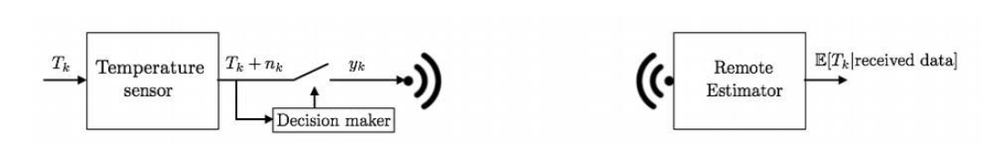
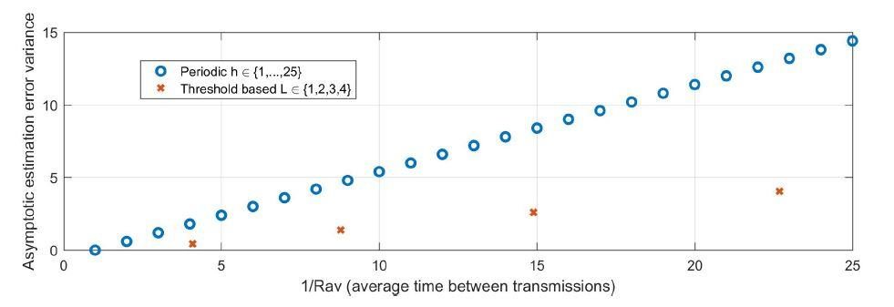

import numpy as npRemote Temperature Sensing with the Bayes’ filter
In several applications, especially in the context of wireless sensor networks, data of interest such as temperature, pressure, images, etc. is acquired by several stand-alone sensors and transmitted to a remote central station, as illustrated in the figure below. Since these sensors are stand-alone, battery life is a concern; one of the main factors limiting the battery life are wireless transmissions. Therefore it is desired to obtain accurate estimates while minimizing transmissions. In this exercise, we will consider a sensor transmitting temperature measurements to a remote station and we will study and compare two forms of remote sensing: periodic transmissions and threshold based transmissions.

We will consider the following model for the evolution of the temperature \(T_k\) at time \(k \in \{0, 1,...., h\}\)
\[T_{k+1}=T_{k}+U_{k}+w_{k}\]
where \(U_k\) is the temperature control input and the \(w_k\) are independent and identically distributed random variables. We will consider a quantized model for \(T _k\), quantized with a step \(\epsilon\), by considering that the disturbances live in a finite set with \(n_r = 2n_w + 1\) elements, where \(n_w\) is a positive integer, and are characterized by
\[\text{Prob}\left[w_{k}=\epsilon \bar{w}_{i}\right]=r_{i}\]
with \(\bar{w}_{i}=-n_{w}+i-1\) for \(i \in\left\{1, \ldots, n_{r}\right\}\)and \(\sum_{i=1}^{n_{r}} r_{i}=1\). We assume that the input is zero, \(U_{k}=0\), for every time \(k\).
For a periodic transmission strategy with period \(N\), the remote sensor has access to the following measurements
\[ y_{k} = \left\{ \begin{array}\\ {T_{k}+v_{k}, \text { if } k=0 \text { or } k \text { is an integer multiple of } N} \\ {\emptyset, \text { otherwise }} \\ \end{array} \right. \]
where \(\emptyset\) denotes the event of no transmission and \(v_{k}\) models sensor noise which, as \(w_{k}\), is assumed to live in a finite set with \(n_{q}=2 n_{v}+1\) elements where \(n_{v}\) is a positive integer, and characterized by
\[\text{Prob}\left[v_{k}=\epsilon \bar{v}_{i}\right]=q_{i},\]
where \(\bar{v}_{i}=-n_{v}+i-1\) for \(i \in\left\{1, \ldots, n_{q}\right\}\), and \(\sum_{i=1}^{n_{q}} q_{i}=1\), For a threshold based policy, the remote sensor has access to the following measurements
\[y_{k}=\left\{ \begin{array}\\ {T_{k}+v_{k}, \text { if }\left|y_{k}-\hat{y}_{k-1}\right|>L} \\ {\emptyset, \text { otherwise }} \end{array} \right. \text{,}\]
where \(L \in\{\epsilon | k \in \mathbb{Z}\}\) is the threshold and \(\hat{y}_{k}\) is the most recently received measurement, which is described by \(\hat{y}_{0}=T_{0}\) (assuming the initial temperature is known at the remote side) and
\[\hat{y}_{k}=\left\{ \begin{array}\\ {\hat{y}_{k-1} \text { if } y_{k}=\emptyset} \\ {y_{k}, \text { otherwise }} \end{array} \right.\]
Let \(I_{k}:=\left\{y_{0}, y_{1}, y_{2}, \ldots, y_{k}\right\}\) be the information available by the remote estimator at time \(k\), besides the initial temperature \(T_{0}\). The goal of this live script, is to compute
\[\text{Prob}\left[T_{k}=\epsilon i | I_{k}\right],\]
which allows to compute the estimate \(\mathbb{E}\left[T_{k} | I_{k}\right]\) of the temperature at the remote side and compute and compare the average transmission rate and estimation error variance of both transmission methods, as exemplified in the appendix for the case where is no sensor noise.
The Matlab functionbayesfilterperiodicsensing computes the \(\text{Prob}\left[T_{k}=\epsilon
i | I_{k}\right]\), for a given horizon \(k \in\{0, \ldots, h\}\) when transmissions are
periodic. The input arguments are: * A cell object y with \(h+1\) components such that \(y\{k+1\}=[] \, 1 \text { if } y_{k}=\emptyset \text { and } y\{k+1\}=\frac{y_{k}-T_{0}}{\epsilon}\),otherwise, for \(k \in\{0,1, \ldots, h\}\). Note that \(y\{k+1\}=[]\) if \(k\) is not 0 or an integer multiple. * The vector of probabilities \(r=\left[r_{1}.....r_{n}\right]\). * The vector of probabilities \(q=\left[q_{1}.....q_{n_{q}}\right]\)
The output is a \(\left(2 n_{w}(h+1)+1\right) \times(h+1)\) matrix \(\mathrm{p}=\left[p_{i j}\right]\) where each component equals
\[p_{i j}=\text{Prob}\left[T_{j-1}=T_{0}+\epsilon\left(-n_{w} h+i-1\right) | I_{j-1}\right]\]
for \(\left.i \in\left\{1, \ldots, 2 n_{w}(h+1)+1\right)\right\}, j \in\{1, \ldots, h+1\}\)
Additionally, the function bayesfilterthresholdsensing computes \(\text{Prob}\left[T_{k}=\epsilon
i|I_{k}\right]\) for a given horizon \(k \in\{0, \ldots, h\}\) when transmissions follow the threshold based policy and there is no sensor noise \(\left(v_{k}=0
\text { for every } k\right)\). The inputs and outputs are the same as functionbayesfilterperiodicsensing and the input \({L_{int}}\) , is an integer such that the threshold is \(L=\epsilon\) Lint. Although redundant, it can be assumed that \(y\{1\}=[]\).
The following example can be used to test both functions.
def bayesfilterperiodicsensing(y, p, q):
# initializations
h = len(y)
lp = len(p)
nw = (lp - 1) // 2
nq = len(q)
nv = (nq - 1) // 2
nx = (lp - 1) * h + 1
P = np.zeros([nx, h])
p0 = np.zeros([nx, 1])
p0[(nx - 1) // 2, 0] = 1 # initial probability distribution
M = np.zeros([nx, nx]) # transition matrix Bayes filter
R = np.zeros([nx + 2 * nv, nx]) # sensor matrix Bayes filter
# Matrices M and R
for i in range(0, nx):
if i <= nw-1 or i >= nx - nw - 1:
M[i, i] = 1
else:
M[i - nw: i + nw + 1, i] = p
for i in range(0, nx):
R[i - nv + nv: i + nv + nv + 1, i] = q
# Bayes's filter
# first measurements
phat = np.diag(R[nv + y[0] + (nx - 1) // 2, :]) @ p0
P[:, [0]] = phat / sum(phat)
for k in range(0, h - 1):
p_1 = M @ P[:, k]
if not not y[k+1]:
phat = np.diag(R[nv + y[k + 1] + (nx - 1) // 2, :]) @ p_1
P[:, k + 1] = phat / sum(phat)
else:
P[:, k + 1] = p_1
return Pdef bayesfilterthresholdsensing(y, p, L):
# initializations
h = len(y)
lp = len(p)
nw = (lp - 1) // 2
q = [1]
nq = len(q)
nv = (nq - 1) // 2
nx = (lp - 1) * h + 1
P = np.zeros([nx, h])
p0 = np.zeros([nx, 1])
p0[(nx - 1) // 2, 0] = 1 # initial probability distribution
M = np.zeros([nx, nx]) # transition matrix Bayes filter
R = np.zeros([nx + 2 * nv, nx]) # sensor matrix Bayes filter
R2 = np.zeros([nx + 2 * L, nx])
# Matrices M and R
for i in range(0,nx):
if i <= nw -1 or i >= nx - nw -1:
M[i, i] = 1
else:
M[i - nw: i + nw + 1, i] = p
for i in range(0,nx):
R[i - nv + nv: i + nv + nv + 1, i] = q
for i in range(0, nx):
R2[i - L + L: i + L + L + 1, i] = (1 / (2 * L + 1) * np.ones(2 * L + 1))
# Bayes's filter
yhat = [[] for _ in range(h-1)]
yhat[0] = 0 # initial error is zero
y[0] = 0 # initial measurement is zero
phat = np.diag(R[y[0] + (nx - 1) // 2, :]) @ p0
P[:, [0]] = phat / sum(phat)
for k in range(0, h - 1):
p_1 = M @ P[:, k]
if not not y[k+1]:
yhat[k + 1] = y[k + 1]
phat = np.diag(R[y[k + 1] + (nx - 1) // 2, :]) @ p_1
P[:, k + 1] = phat / sum(phat)
else:
yhat[k + 1] = yhat[k]
phat = np.diag(R2[yhat[k + 1] + (nx - 1) // 2 + L, :]) @ p_1
P[:, k + 1] = phat / sum(phat)
return P# Choose function to implement: 1 for functionbayesfilterperiodicsensing
# and 2 for bayesfilterthresholdsensing
ChooseFunc = 1
y = [[] for _ in range(7)]
# Sample input for the implementation of the functionbayesfilterperiodicsensing
if ChooseFunc == 1:
y[0] = 0
y[1] = []
y[2] = []
y[3] = 2
y[4] = []
y[5] = []
y[6] = -2
r = np.array([0.1, 0.8, 0.1])
q = np.array([0.1, 0.8, 0.1])
P = bayesfilterperiodicsensing(y, r, q)
else:
# Sample input for the implementation of the function bayesfilterthresholdsensing
y[0] = []
y[1] = []
y[2] = 2
y[3] = []
y[4] = 4
y[5] = []
y[6] = []
r = np.array([0.1, 0.1, 0.6, 0.1, 0.1])
L = 1
P = bayesfilterthresholdsensing(y, r, L)PAppendix
In this appendix we assume that there is no sensor noise (\(v_k=0\) for all \(k\)) and \(r_{nw+1+i} = r_{nw+1-i}\) for every \(i\in \{1,\dots,n_w\}\). Let \(\sigma_k=0\) if there is no transmission at time \(k\) (i.e., \(y_k=\emptyset\)) and \(\sigma_k=1\) otherwise. Then, the average transmission rate is
\[ R_\text{ave}=\lim_{M\rightarrow \infty} \frac{1}{M}\mathbb{E}[\sum_{k=0}^{M-1}\sigma_k]\]
let us also define the remote estimation error \(e_k:=T_k-\hat{T}_k\), where \(\bar{T}_k=\hat{y}_k\), and \(T_k=y_k\), and the asymptotic error estimation variance as
\[ V_\text{ave}=\lim_{M\rightarrow \infty} \frac{1}{M}\sum_{k=0}^{M-1}\mathbb{E}[e_k^2].\]
Let us define the event of no transmissions up to time \(k\), \(\mathcal{A}_k:=\{\emptyset,\emptyset,\dots,\emptyset\}\) and
\[p^0_{i,k}:= \text{Prob}[T_k=T_0+\epsilon i|I_k=\mathcal{A}_k]\]
which can be computed from the output p of the functions bayesfilterperiodicsensing and bayesfilterthresholdsensing when y corresponds to no transmissions for every time step \(\ell\) up to \(k\) (\(y\{\ell+1\}=[]\)), except when \(\ell=0\). It can be shown that for periodic transmissions with period \(N\),
\[\text{Periodic:} \ \ \ \ \ \ \ \ \ \ \ \ R_\text{ave}=\frac{1}{N}, \ \ \ \ \ \ \ \ \ V_\text{ave} =\frac{1}{N}\sum_{k=1}^{N-1} \sum_{i=-n_wk}^{n_wk}i^2p^0_{k,i}, \]
and for threshold based policies
\[\text{Threshold:} \ \ \ \ \ \ \ \ \ \ \ \ R_\text{ave}=\frac{1}{\sum_{k=0}^{\infty}\gamma_k}, \ \ \ \ \ \ \ \ \ V_\text{ave} =R_\text{ave}\sum_{\ell=0}^\infty (\sum_{k=1}^{\ell-1}\sum_{i=-(L-1)}^{L-1}i^2p^0_{k,i})(\gamma_\ell-\gamma_{\ell+1}), \]
where, for \(k \in \mathbb{N}\cup \{0\}\), $ _{k+1}:=a_k_k, _0=1,
$ \(a_k=\sum_{i=-(N-1)}^{N-1}b_ip^0_{k,i}\), \(a_0=b_0\), \(b_i=\sum_{j\in
\mathcal{J}_i}r_{n_w+1+j}\), and \(\mathcal{J}_i:=\{j\in \mathbb{N}| -N\leq
j+i \leq N,-n_w\leq j\leq n_w\}\). For the values \(r = [0.1 \,\,\, 0.2 \,\,\, 0.4 \,\,\, 0.2 \,\,\, 0.1]\), the figure below plots the pairs average transmission rate and average estimation error variables for several values of \(N\) and \(L\) for the two transmission policies (note that as expected the threshold based transmission policy yields a better trade-off).
